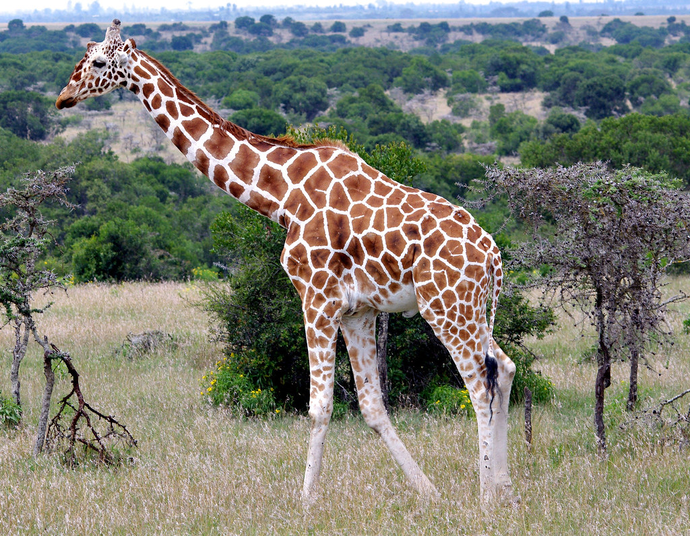
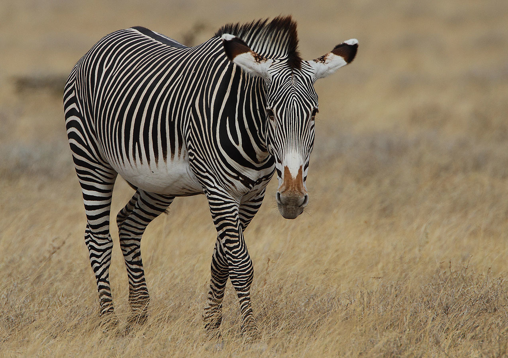
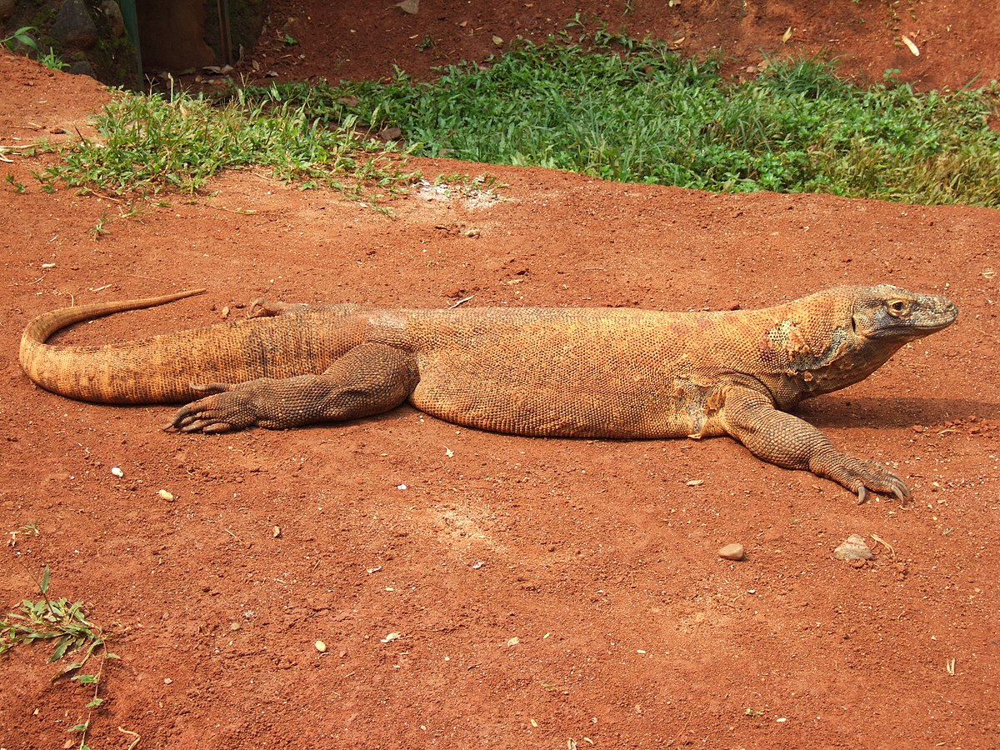
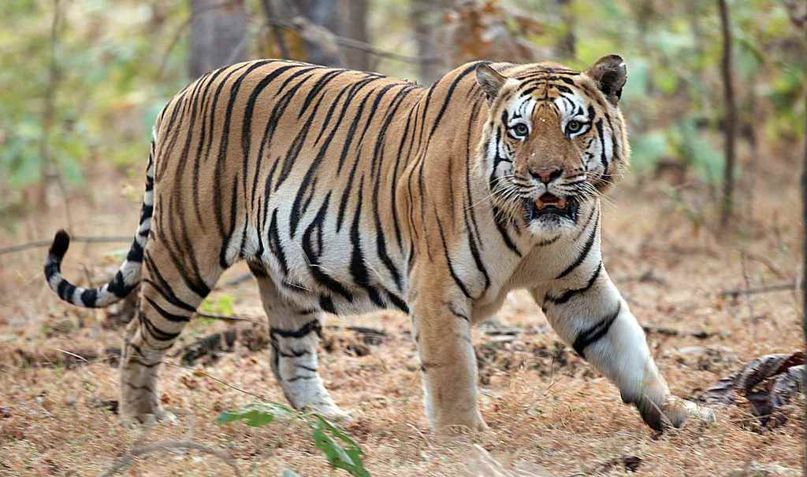

Žirafa (Giraffa camelopardalis)
Žirafa je nevjerojatna kopnena životinja poznata po svojoj impresivnoj visini, koja je čini najvišom životinjom na svijetu. Više...

Grévyjeva zebra (Equus grevyi)
Grévyjeva zebra je najrjeđa i najveća vrsta zebre, poznata po svojim karakterističnim crno-bijelim prugama koje su jedinstvene za svaku jedinku. Više...

Komodski varan (Varanus komodoensis)
Komodski varan, poznat i kao "zmaj s Komoda", najveći je gušter na svijetu i može doseći dužinu do 3 metra te težinu do 90 kilograma. Više...

Orao Harpyja (Harpia harpyja)
Orao Harpyja jedna je od najvećih i najmoćnijih ptica grabljivica na svijetu, a karakteristična je po svojim velikim kandžama koje mogu doseći dužinu do 13 centimetara – veće su čak i od pandži grizlija. Više...

Bengalski tigar (Panthera tigris tigris)
Bengalski tigar jedan je od najpoznatijih i najugroženijih velikih mačaka na svijetu. Više...